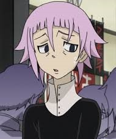

Welcome to part two: gender boogaloo. Crossdressing is one thing, but some characters-and people- exist completely outside of the manga panel box, so let's ruminate on these androgynous legends.

While many people critique Seven Deadly Sins for its heavy-handed fan service, I quite enjoyed the serve that came in the character Gowther. I became attached to this character right away, with their low-rise pants, pink hair, deadpan face and pure power–Gowther is a non-binary’s dream. I’ll admit there isn't much of a lesson I am pulling forward here other than this character is fierce.I enjoyed the fluidity in which Gowther was presented, while sometimes putting on a short skirt for a joke in the anime, often naturally too without mention at all. The way the anime started to shift from the concept going against expectations for the joke to a more genuine portrayal was a great effort.
An example for “pure” androgyny on my list is Crona from Soul Eater. What’s really cool about this character is that not only does it not matter what gender they are, it doesn’t matter that it doesn’t matter! Whether Crona is a boy or a girl has zero effect on the plot or character development, and Crona being non-binary also has zero effect on the plot or character development. In the consolidated Japanese dialogue, the other characters use gender non-specific pronouns when referring to Crona, and aside from a few lines questioning what they are, it's never really confirmed. It is generally believed Crona could be a boy due to their clothes looking like a clergy boy robe and them panicking when confronted by Maka that they “don’t know how to deal with girls”. That is still not the point, and it isn't even the point of the character to not know. Crona has black blood and is being manipulated by Medusa to become a powerful death weapon-that’s the point.
Crona’s character design is classic androgyny with short hair, obscure dark clothes and a straight but hunched over figure. While believed to probably be a boy, as stated above, the actual character design is more like the girls of the show-especially Maka. Their general stature is quite similar with longer lines making rectangular shapes and darker colours. When in contrast, the boys in the show are typically more square, sharp and have brighter colours. So Crona, in the world of the show, is supposed to be both-male and female. Crona and Ragnarok. Miser and weapon. Weakness and strength. Fear and power. Crona can represent the binary itself in one character, and how holding two truths is a contradiction but not untrue. Crona showed me this; and how I can be masculine and feminine because both can be true at the same time.
This is the time that I have to expose one of my biggest anime blind-spots. I know there are some gender-conforming or transgender characters in One Piece, however I have no knowledge or even a desire to watch or read it. I started to do some research but I couldn't grasp enough information to confidently discuss it here. I will say that with the next season of the live-action coming out in March 2026, they announced the casting of Cole Escola for the character Bon Clay which we will celebrate here. Casting an actual non-binary person to play a gender-queer character is a win for all of us and I’m so happy to see it. So please don’t condemn me; I treat One Piece like a wild moose, I respect the giant, glorious beast from afar.